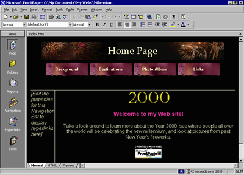

| ||||
Although the page banner of this theme looks nice, something directly related to the subject matter of the Millennium Celebration Web might fit better. We've prepared a custom page banner that you will use to modify the current theme with. This custom banner provides a colorful fireworks backdrop for the page banner text.
To modify a theme
FrontPage brings the home page back into view.
FrontPage displays the Themes dialog box. In the list of themes, the Artsy theme is now the default theme because it has been applied to the current Web site.
FrontPage displays the Modify Theme dialog box. Here, you can supply custom graphics for various theme elements such as page banners, navigation buttons, background pictures, and other elements. FrontPage superimposes text over these graphics, so there is no need to change graphics when you change the names of your pages, or add or remove pages.
For this example, we will change the graphical page banner on which FrontPage places the titles of the pages in the Millennium Celebration Web.
FrontPage displays the Select Picture dialog box and shows the current pictures in your current Web site. Since the graphical banner we want to use isn't part of the Web site yet, you will search your file system for it.
FrontPage displays the Select File dialog box.
FrontPage replaces the current page banner graphic with the custom graphic.
FrontPage displays a message asking you whether you want to save changes to the current theme.
FrontPage saves the modified theme and applies the new banner to all pages.
Your page should now look like this:

Congratulations, the Millennium Celebration Web is almost finished! To make sure everything will look great on the World Wide Web, you'll now preview the Web site in your Web browser.
Did you find this material useful? Gripes? Compliments? Suggestions for other articles? Write us!
© 1999 Microsoft Corporation. All rights reserved. Terms of use.